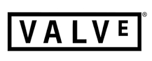

Steam歷史:
Steam於2002年創立，是由維爾福(Valve)公司創立,在那時看來只不過是像線上遊戲似的將修補程式更新過程簡化而已，但後來取代了原先的世界對抗網路系統而且成為所有遊戲的銷售和數位內容權力管理系統。
2014年維爾福(Valve)宣布Steam已經突破全球1億註冊帳戶超過七千五百萬個活耀的用戶，Steam上有超過3700個遊戲。
Steam剛出不久時，曾找微軟、Yahoo和RealNetWorks合作，但是都被拒絕。
2002年，第一個Steam客戶端面世。其主要功能是精簡電腦遊戲的更新程式，同時為絕對武力1.6進行公測。
玩家下載的測試版遊戲與Steam軟體綁定，而Steam伺服器因為數十萬對絕對武力的下載請求而不勝負荷。2004年，Steam平台取代了世界對抗網路系統（WON），本來需要後者來登入連機模式的遊戲全轉移到了Steam平台。